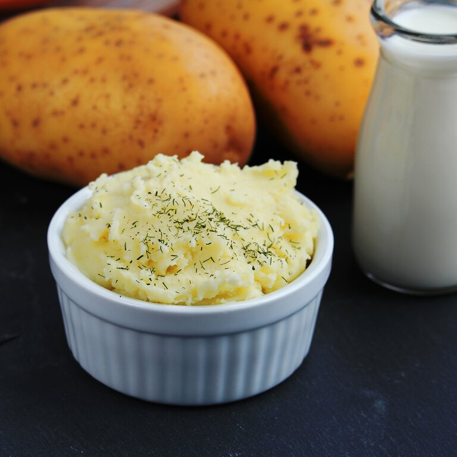

Basic Mashed Potatoes

Desctiption
If you love good, old fashioned mashed potatoes this is the perfect recipe. Simple and delicious.
Ingrediants
- 2 pounds baking potatoes
- 2 tablespoons butter
- 1 cup milk
- Salt and peper to taste
Directions
- Bring a pot of salted water to a boil. Add potatoes and cook until tender but still firm, about 15 minutes; drain.
- In a small saucepan heat butter and milk over low heat until butter is melted. Using a potato masher or electric beater, slowly blend milk mixture into potatoes until smooth and creamy. Season with salt and pepper to taste.
Back to main page